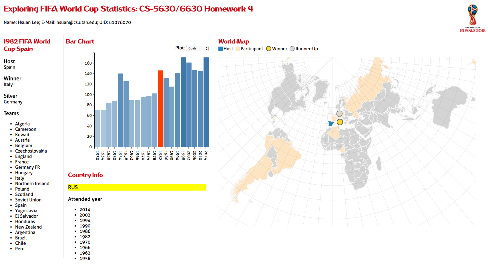
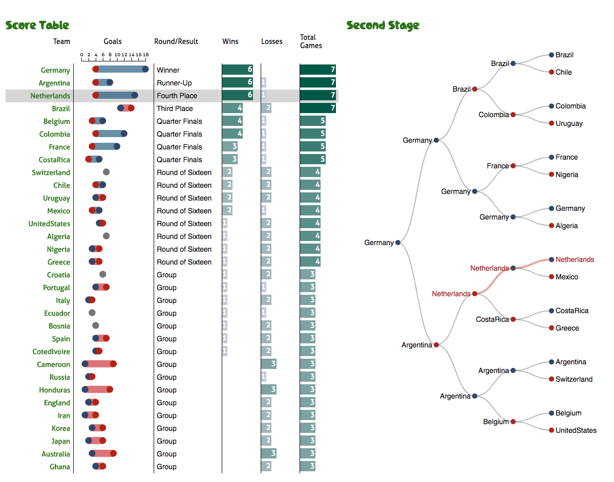

Visualization: statistics from Fifa World Cup Games
- HTML, JavaScript, D3, CSS
- Bar Chart: Provide the evolution of attendance, total number of goals, the number of games, and the number of participating countries over the years.
- World Map: highlight the host country, all participating countries, as well as the gold and silver medal winners.
- Info Panel: display host, winner and runner-up, and show a list of all participants.
- Country Info: respond to the click on world map and display a list of World Cups the country participated in.
Source code on Github

Explore game statistics from the Fifa World Cup in 2014
- HTML, JavaScript, D3, CSS
- Score Table: List the statistics of all attendants, click event on the column title can sort the result.
- Second Stage: Show game result on second stage, this tree map respond the hover event on Score Table.
Source code on Github
